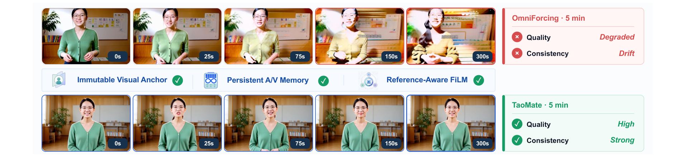
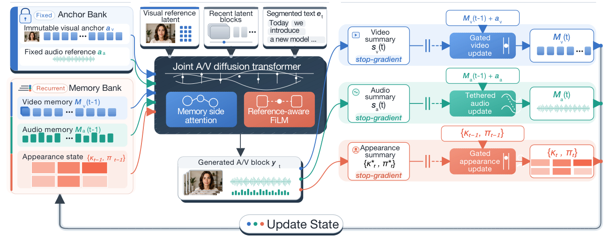
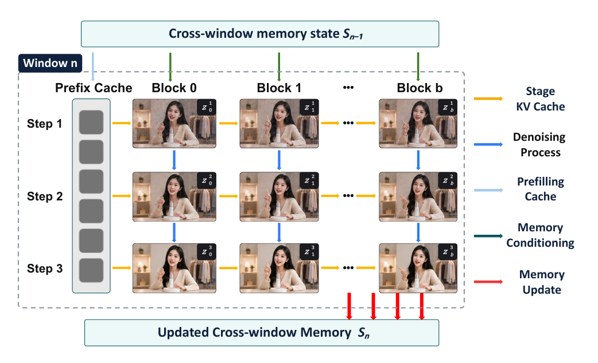
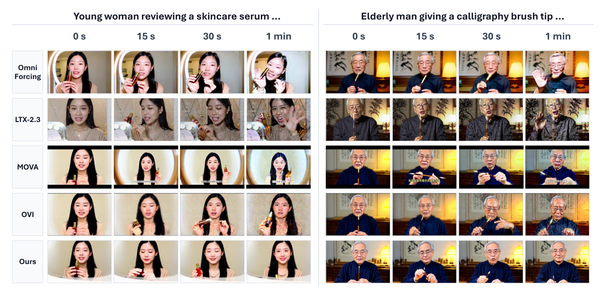

TaoMate:用一块"锚点"记住她最初的样子
实时数字人最难的不是生成一帧像样的脸,而是第一百秒时那张脸还是同一个人。TaoMate 把"永远不变的视觉锚点"与"持续演化的音视频记忆"拆成两套东西,再让它们通过不同的通路进入模型——1000 秒不漂移,3 张卡 35 FPS。
博客自绘:左侧锚点被永久保留并在每次更新中重新注入;中间自适应记忆按几何级数遗忘;右侧是结果——跨 1000 秒的一致身份。
五分钟后,她的脸变了
让模型生成 5 秒的说话视频,今天的扩散模型做得很好。让同一个模型连续生成 5 分钟——中间还要换动作、换台词、换镜头——问题就来了:她不再是同一个人。
1.1 三种漂移,三种病因
论文 Figure 1 给出了最直观的对照:同一个主体、同一段 300 秒的输出,上面一行是 OmniForcing,下面一行是 TaoMate。

论文 Figure 1(原图坐标裁剪):上行 OmniForcing 在 300 秒内出现明显的肤色偏移、面部结构变形与背景色漂移;下行 TaoMate 在 0s / 25s / 75s / 150s / 300s 五个时刻保持同一张脸、同一件毛衣、同一个书架的色调。中间那行是论文主张的三个机制。
把"漂移"拆开看,至少有三类,而且它们的病因完全不同:
| 漂移类型 | 看得见的现象 | 数学机制 |
|---|---|---|
| 外观漂移 | 肤色慢慢变、衣服颜色越来越不一样 | 通道级均值/方差被反复"重新估计",误差随机游走 |
| 结构漂移 | 脸型变了、五官比例变了 | 每一块都以"上一块的不完美预测"为条件,误差逐块累积 |
| 场景漂移 | 背景从暖黄慢慢变冷、构图偏移 | 长期证据离开 cache 后彻底消失,模型没有依据 |
SVG ①|自绘 —— 三类漂移的机制完全不同,所以任何单一补丁都只能治一种。
1.2 KV cache 的两难:论文的出发点
自回归生成时,模型需要"看见"之前生成的东西才能保持一致。看见的方式是把过去的 token 的 Key/Value 缓存下来(叫 KV cache)。这里有一个硬约束:
| 做法 | 好处 | 代价 |
|---|---|---|
| 有界 cache(只留最近 N 块) | 显存与算力恒定,能无限生成 | 更早的主体/场景/声学证据被永久丢弃。300 秒后模型已经"忘了"她原来长什么样 |
| 全历史 cache | 信息完整 | 注意力 \(O(L^2)\)、显存 \(O(L)\);而且更糟的是——它反复以自己旧的、不完美的预测为条件,错误被当成事实不断强化 |
论文的原话是:保留完整生成历史会让"注意力和存储随持续时间增长,并反复让生成器以旧的、不完美的预测为条件"。
为什么"看得更多"反而更差
直觉上信息越多越好。但在自回归生成里,历史不是干净的——它是模型自己产出的、带误差的内容。当你把这段历史当作条件,你在做的是把自己过去的错误当作既成事实。误差像滚雪球:第一块脸偏了 2%,第二块以"偏 2% 的脸"为参考再偏 2%,依此类推。所以"全历史"不是解药,它甚至可能加剧结构漂移——只是让场景漂移得到缓解。
1.3 因果蒸馏为什么也没解决
近两年有一类方法叫"因果蒸馏"(Self-Forcing 等,论文引用 Huang et al. 2025a;Zhu et al. 2026):让一个双向的 teacher 模型教一个只看过去的 student,并且训练时就用 student 自己生成的历史当条件,以减少"训练看得见未来、推理看不见"的差距(这叫 exposure bias)。
论文指出这还不够,理由很精确:
teacher 的条件是真实/干净的双向上下文,记为 \(c^{\text{teacher}}\);student 部署时的条件是自己生成的因果历史,记为 \(c^{\text{student}}\)。
即使做了自回归蒸馏,仍然有分布差:
而且:即使蒸馏完美,信息本身也不在。有界 cache 意味着第 1 块的证据在很久之后根本不在条件里。这不是"分布匹配"能解决的问题,而是"信息容量"问题。
1.4 论文的三条主张
对应论文的三条贡献:"锚点引导的持久多模态记忆"、"rollout 对齐的因果蒸馏"、"免训练的阶段并行推理"。后面三章逐一拆解它们的数学。
系统解剖:四个部件
TaoMate 不是一个新的扩散骨架。它是在一个已有的联合音视频 DiT(论文明确说初始化自蒸馏过的 LTX-2.3 checkpoint)外面,加了一套记忆系统。所以理解它的关键是理解"记忆怎么存、怎么更新、怎么被读出来"。
2.1 分解树

论文 Figure 2:左侧是固定锚点库(Anchor Bank)与循环记忆库(Memory Bank);中间是联合音视频 DiT,含两条条件化通路(Memory side attention / Reference-aware FiLM);右侧是三种更新器——视频"Gated"、音频"Tethered"、外观"Gated"。注意所有更新器旁边都标了 stop-gradient。
2.2 那个恒等式:为什么它能"无限长"
论文的式 (1) 是全文的地基:
| 符号 | 含义 | 为什么关键 |
|---|---|---|
| \(z_t=(z^v_t,z^a_t)\) | 第 t 个块的音视频潜变量 | 块是生成的最小单位;同一文本条件的连续块组成一个"提示段" |
| \(e_t\) | 该块对应的文本条件 | 动作、台词、镜头都在这里 |
| \(C_{t-1}\) | 有界活动上下文 | 带位置,管局部连续性 |
| \(M_{t-1}\) | 持久记忆 | 定长,管长期一致性;成本与已生成时长无关 |
| \(\mathrm{sg}(\cdot)\) | stop-gradient | 切断反向传播,避免"穿过无限长记忆更新链"求梯度 |
这个式子的精妙之处:条件只来自过去,而记忆是"被写,不被反传"
注意 \(M_t\) 的更新用的是 \(\mathrm{sg}(z_t)\)——当前块对记忆的写入不参与梯度。这一条同时解决两个问题:
(1) 计算:如果记忆更新可微,那么第 100 块的对数似然要对前 99 次更新求导,计算图会无限长。sg 一刀切断。
(2) 因果性:\(M_t\) 在 \(z_t\) 生成之后才更新,所以第 t 块的条件里只含"前面块"的信息。这保证了训练和推理的时间箭头一致。
代价是:记忆更新规则(\(\beta,\lambda\)、门控)不能通过端到端学习得到,必须手工设计。这就是为什么第 3、4 章那些公式存在——它们是"不能学"的部分,所以必须算清楚。
2.3 记忆里到底存了什么

论文 Figure 3:阶段并行推理。横轴是块(Block 0..b),纵轴是去噪阶段(Step 1..3)。黄色箭头是 KV cache(同阶段向前),蓝色箭头是去噪推进(同块向下一阶段),红色箭头只在最后阶段结束、块已干净时才更新记忆。所以同时可执行的任务落在反对角线上。
论文把 \(M_t\) 拆成六样东西(式 2):
| 分量 | 是什么 | 从哪来 | 更新吗 | 参数 (β, λ) |
|---|---|---|---|---|
| \(a^v\) | 视觉锚点(压缩后的初始块) | 第 0 块 | 永不更新 | — |
| \(a^a\) | 音频参考(初始声学特征) | 第 0 块 | 永不更新 | — |
| \(m^v_t\) | 视频内容记忆(空间结构) | 每块的归一化空间表示 | 门控更新 | (0.15, 0.20) |
| \(m^a_t\) | 音频内容记忆(声学结构) | 每块的归一化时间表示 | 无门控更新 | (0.10, 0.10) |
| \(\kappa_t\) | 通道级外观统计(均值、尺度) | 原始视觉潜变量 | 门控 + 硬拒绝 | (0.03, 0.60) |
| \(\pi_t\) | 低频外观(粗空间统计) | 去噪后的视觉潜变量 | 门控 + 硬拒绝 | (0.03, 0.60) |
压缩锚点 ≠ 位置化初始潜变量
论文专门用一句话澄清这件事:压缩后的视觉锚点 \(a^v\) 和活动上下文 \(C_t\) 里保留的"未压缩、带位置的初始视觉潜变量"是两个不同的东西。
前者是紧凑的长期参考证据(经过投影、定长、无位置);后者是token 级的显式条件(参与因果注意力、带 RoPE 位置)。两者都存在,是因为它们回答不同的问题:"她长什么样"(锚点) vs "上一帧之后该接什么"(活动上下文)。
2.4 从条件到输出的两条通路
记忆不是简单拼到序列里。论文明确反对这样做(见第 5 章),而是分成两条结构上匹配的通路:
第一行:内容通过跨模态注意力检索(query 是当前特征,key/value 是记忆);第二行:外观通过 FiLM 做通道级的仿射调制。为什么这样分,第 5 章给理由。
2.5 规模与成本
| 项 | 数值 | 备注 |
|---|---|---|
| 总参数 | 22.1B | Table 1 口径(基线 LTX-2.3 为 22B) |
| 新增可训练参数 | 约 97.8M | 模态编码器 + 视频 FiLM + 记忆分支;只占 0.44% |
| 记忆注意力插入 | 每 4 层,48 层中 12 层 | 不是全层插入——省算力的选择 |
| 记忆 token 数 | 视频 48 / 音频 64 | 定长,与已生成时长无关 |
| 去噪步数 | 每块 3 步 | few-step,实时性前提 |
0.44% 的参数解决 22B 模型的问题,这说明瓶颈不在"容量"
整个方法只增加 97.8M 参数,却把长视频一致性从 0.9619 拉到 0.9755、颜色漂移减半。这反过来说明:22B 的主干并不缺表达能力,它缺的是"信息通路"。
这很像人类记忆:你的大脑并不是因为神经元不够才忘记十年前的事,而是因为那些信息没有合适的检索路径。TaoMate 的贡献本质上是给一个已经很聪明但健忘的模型,装了一套档案系统。
数学核心 I:锚约束的内存演化
这一章只讲论文式 (4)。它看起来像小学生都会的加权平均,但把它展开之后,你会发现三件论文没有明说、却决定了整个系统行为的事情。
3.1 公式与三个系数
三个输入:
\(m\) = 上一次的估计(previous estimate)
\(s\) = 当前块的观测(observation)
\(a\) = 固定参考(anchor)
两个旋钮:\(\beta\) 控制"多信新观测",\(\lambda\) 控制"多信锚点"。
展开后,三个输入各自的系数是:
非负性。假设 \(0\le\beta\le1\)、\(0\le\lambda\le1\),则 \(1-\lambda\ge0\)、\(1-\beta\ge0\)、\(\beta\ge0\)、\(\lambda\ge0\)。三个系数都是非负数乘积或本身,所以非负。
和为 1。把三项加起来:
前两项先合并:\((1-\lambda)\big[(1-\beta)+\beta\big]=(1-\lambda)\cdot1=1-\lambda\)。
再加上 \(\lambda\):\((1-\lambda)+\lambda=1\)。∎
几何意义。权重非负、和为 1 \(\Rightarrow\) \(\mathcal E\) 落在三点 \(m,s,a\) 构成的三角形内,且是三者的加权欧氏重心。所以这个更新永远不越界——不会因为"平均"而跑到一个谁也没见过的区域去。这是它比"直接相加/拼接"稳健的根本原因。
3.2 展开递推:一个几何级数
把式 (4) 当成时间上的递推,记 \(m_t\leftarrow\mathcal E(m_{t-1},a,s_t;\beta,\lambda)\),并令
则递推变成标准的一阶线性形式:
展开一步:
再展开 \(m_{t-1}\),然后 \(m_{t-2}\)……得到:
读第二项。\(b c^{k}\) 是"\(k\) 步之前的那个观测 \(s_{t-k}\)"的权重。因为 \(0 \lt c \lt 1\),这个权重按 \(k\) 几何衰减。
读第三项。锚点的权重是 \(\lambda c^{k}\) 的累加,不是单项。因为锚点每一次更新都被重新注入,所以它不衰减,而是不断累积。
半衰期。令 \(c^{k}=1/2\),得 \(k_{1/2}=\dfrac{\ln(1/2)}{\ln c}=\dfrac{-\ln2}{\ln c}\)。
3.3 稳态份额:锚点到底占多少
令 \(t\to\infty\),则 \(c^t\to0\),而几何级数 \(\sum_{k=0}^{\infty}c^{k}=\dfrac{1}{1-c}\)。于是:
注意 \(\bar s\) 是各期观测的加权平均。现在验证两个权重加起来是否等于 1——这个验证很漂亮:
需要证 \(\dfrac{b+\lambda}{1-c}=1\),即 \(b+\lambda=1-c\)。代入定义 \(b=(1-\lambda)\beta\)、\(c=(1-\lambda)(1-\beta)\):
比较两式右边:
因此可以写出两个干净的份额公式:
代入论文的三组超参,算出它们各自的"性格"
| 用途 | (β, λ) | c | 锚点稳态份额 | 观测份额 | 半衰期 | 解读 |
|---|---|---|---|---|---|---|
| 视频 | (0.15, 0.20) | 0.680 | 62.5% | 37.5% | 1.80 步 | 锚点为主,但允许明显的姿态/场景演化 |
| 音频 | (0.10, 0.10) | 0.810 | 52.6% | 47.4% | 3.29 步 | 几乎一半一半,衰减最慢——音节变化快,必须灵活 |
| 外观 | (0.03, 0.60) | 0.388 | 98.0% | 1.96% | 0.73 步 | 几乎完全锁死在锚点,观测只有 2% 的话语权 |
外观分支的 98%:这不是"调参",这是"投降"
外观分支的锚点份额高达 98.0%,意味着无论后面生成什么,颜色和对比度基本不会变。这解释了为什么 TaoMate 的 Color Δ 能低到 0.0026(比第二名低 51.9%)——它几乎放弃了对颜色的自适应。
这是一个非常果断的工程取舍:颜色/对比度这类全局低频信息,几乎不需要随剧情变化;而一旦允许它慢慢跟,就会变成随机游走(第 1 章的面板①)。所以作者把它钉死。
代价也是明摆着的:如果场景真的需要换灯光(比如"走到窗边"),这个分支几乎不会响应,只能靠 FiLM 的动态部分去补。论文没有讨论这种失败情形——这是一个可以追问的点(见第 11 章 RQ2)。
SVG ②|自绘 —— 权重曲线由 \(c^{k}\) 直接绘制,半衰期由 \(\ln(1/2)/\ln c\) 算得。
3.4 为什么音频不门控、视频要门控?
论文给的理由很干脆:音素的快速变化是"预期之内"的,而不是身份漂移的证据。
用我们的份额公式看就很清楚:音频的观测份额 47.4% 已经接近一半,衰减最慢(3.29 步)。如果再给它加门控,那么正常的语速变化、音调起伏会被误判为"不可靠"而被压制——结果是声音变得呆板。所以音频只做"系绳"(tethered):锚点固定住音色,内容自由更新。
视频则相反:姿态、镜头、场景本来就应该变,但结构不该变。所以门控不能门住"变化",只能门住"结构不一致的变化"——这就是第 4 章那个余弦相似度门控的来历。
3.5 公式的局限
这个估计器没有"不确定性"
式 (4) 是一个指数加权移动平均(EWMA),它在统计上等价于一个固定遗忘因子的在线均值。它的已知问题:
(1) 无置信区间。它给出一个点估计 \(m_t\),但不会告诉你"这个估计有多可靠"。当观测突然变得一致地坏(而不是偶尔坏),门控也无法察觉——因为门控只看单块与锚点的相似度,不看连续多块的一致性趋势。
(2) 稳态份额固定。不管数据多稳定,锚点永远占 62.5%(视频)。一个更聪明的估计器应该在"观测很可信"时降低锚点权重,在"观测很可疑"时提高——这正对应第 11 章 RQ1 提的自适应 λ。
本章自测
Q3.1 若 \(\beta=0\),更新式变成什么?
Q3.2 视频分支 c=0.68,要几步衰减到 1%?
Q3.3 为什么锚点份额在稳态时不随时长变化?
Q3.4 如果 \(\lambda=1\),会发生什么?
数学核心 II:置信门控
式 (4) 有一个隐含假设:所有观测 \(s_t\) 同等可信。但真实情况是——有些块生成得很好,有些块已经跑偏了。门控就是给每个观测打一个"可信度分"。
4.1 度量:余弦相似度
| 符号 | 含义 | 为什么这样设计 |
|---|---|---|
| \(\mathrm{vec}(\cdot)\) | 把 token 维和通道维摊平成一个向量 | 要算整体相似度,必须先变成一个向量 |
| \(\cos(u,v)=\dfrac{u^\top v}{\|u\|\,\|v\|}\) | 夹角余弦,只看方向不看长度 | 关键:归一化后 \(s^v_t\) 已做过空间标准化,所以余弦对"通道整体偏移"不敏感 |
| \(B\) | mini-batch 内样本数 | 论文明确说 \(\rho_t\) 在一个 batch 内平均——这是一个batch 级统计量,不是逐样本的 |
论文的解释只有一句:"because \(s^v_t\) is spatially normalized, its agreement with the visual anchor is insensitive to first-order channel shifts"。翻译过来:
因为 \(s^v_t\) 做过 \( \mathrm{Norm}_{HW}\)(每个通道在空间维上标准化),一阶的通道偏移已经被除掉。此时剩下的差异主要表现为"空间结构的形状"是否一致——而这正好由方向刻画,与向量的长度(整体能量)无关。余弦相似度就是"只看方向"的度量。
4.2 从相似度到门:一个 sigmoid
| 参数 | 论文取值 | 作用 |
|---|---|---|
| \(\tau\)(阈值) | 0.05 | 相似度低于这个值,门开始关闭 |
| \(T_g\)(温度) | 0.10 | 过渡带的宽度;越小越"硬" |
| \(g_{\min}\)(地板) | 0.10 | 门的最小值,防止完全冻结 |
值域。因为 \(\sigma\in(0,1)\),所以 \(g_t\in(g_{\min},\,1)\)。
中点。当 \(\rho_t=\tau\) 时,\(\sigma(0)=1/2\),于是
两个极限。\(\rho_t\to+\infty\) 时 \(g_t\to1\);\(\rho_t\to-\infty\) 时 \(g_t\to g_{\min}=0.10\)。
手算几个值(取 τ=0.05, T_g=0.10, g_min=0.10)
| 相似度 \(\rho_t\) | \((\rho-\tau)/T_g\) | \(\sigma\) | 门 \(g_t\) | 有效更新率 \(\beta_v g_t\) |
|---|---|---|---|---|
| −0.15 | −2.0 | 0.119 | 0.207 | 0.0311 |
| −0.05 | −1.0 | 0.269 | 0.342 | 0.0513 |
| 0.00 | −0.5 | 0.378 | 0.440 | 0.0660 |
| 0.05(=τ) | 0 | 0.500 | 0.550 | 0.0825 |
| 0.10 | +0.5 | 0.622 | 0.660 | 0.0990 |
| 0.15 | +1.0 | 0.731 | 0.758 | 0.1137 |
| 0.25 | +2.0 | 0.881 | 0.893 | 0.1339 |
| 0.35 | +3.0 | 0.953 | 0.957 | 0.1436 |
4.3 门控如何改变稳态份额(本文的关键推导)
论文把门控写进更新率:\(m^v_t=\mathcal E(m^v_{t-1},a^v,s^v_t;\ \beta_v g_t,\ \lambda_v)\)。也就是说\(\beta\) 被门控缩放了,而 \(\lambda\) 不变。把 \(\beta_{\text{eff}}=\beta_v g_t\) 代回第 3 章的份额公式:
记 \(D(g)=\lambda+\beta g-\lambda\beta g\)。对 \(g\) 求导:
锚点份额 \(=\lambda/D(g)\),分子是常数、分母递增,所以份额随 \(g\) 单调递减。
代入数值(\(\beta_v=0.15,\lambda_v=0.20\)):
| 情形 | \(g_t\) | \(\beta_{\text{eff}}\) | 锚点份额 |
|---|---|---|---|
| 结构高度一致(\(\rho=0.35\)) | 0.957 | 0.144 | 63.5% |
| 刚好达到阈值(\(\rho=0.05\)) | 0.550 | 0.083 | 75.2% |
| 结构明显不符(\(\rho=-0.15\)) | 0.207 | 0.031 | 88.9% |
读这个结果。当生成块与锚点"不像"时,系统不会硬性拒绝(那会冻结),而是把锚点的相对权重从 63.5% 提到 88.9%——平滑地滑向"更信锚点"。这正是"软拒绝"的正确形态:既不接受坏证据,也不失去适应能力。
SVG ③|自绘 —— 左轴紫线是门控本身,右轴红虚线是它通过份额公式"翻译"出来的锚点权重。两者严格反向,这就是"软拒绝"的数学形态。
4.4 外观分支:门控 + 硬拒绝
外观(\(\kappa_t,\pi_t\))用的是"门控 + 硬拒绝"双层机制。论文的原话是:
"We therefore apply the same soft confidence gate to κ_t and π_t, together with a hard rejection rule based on their normalized deviation from anchor statistics. In-range observations support gradual appearance adaptation, whereas outliers leave the previous appearance memory unchanged."
换句话说:
- 软门控:和视频一样,\(\beta_c g_t\) 缩放更新率;
- 硬拒绝:如果观测相对锚点统计的归一化偏差超出某个范围,直接不更新(保留上一轮)。
为什么要多一层硬拒绝?因为颜色误差有一个恶劣性质:它是累积的。一旦颜色开始偏,下一块会把"偏了的颜色"当正常,偏差继续累积——反馈回路。软门控只能减速,不能阻断;硬拒绝是一个绝对上限。
这实际上是"鲁棒的在线估计":软门控 = Huber 权重,硬拒绝 = 内点检验
在鲁棒统计里,处理离群观测有两条经典路线:(a) M-估计,用一个有界的权重函数(如 Huber)给离群点降权;(b) 内点/外点判别,先把明显的外点剔除再估计。
TaoMate 的外观分支两条都用了:sigmoid 门控提供平滑降权(类似 Huber),归一化偏差的硬阈值提供外点剔除(类似 RANSAC 的内点判定)。这在工程上是合理的组合,但论文没有把它上升到"鲁棒估计"的语言,也没有给出阈值的选择依据。这是一个可以深挖的理论空白——见第 11 章 RQ2。
4.5 一个被忽略的细节:ρ 是 batch 级的
论文式 (5) 里,\(\rho_t=\frac{1}{B}\sum_{b}\cos(\cdot)\) 明确对 batch 内 \(b\) 求和平均。这意味着:
推理时的 batch 是什么?
训练时 batch 里有多条独立样本,取平均是一种"共享统计量"的做法——相当于假设一个 batch 内的主体相似度是同一水平。但推理时生成一条视频,batch size 通常是 1。此时 \(\rho_t\) 就是单个样本的余弦值,与训练时的"跨样本平均"语义不同。
论文没有讨论这个 train/test 语义差异。合理的猜测是:作者在推理时用的是单样本的余弦(即 \(B=1\)),那么训练时的 batch 平均只是起到了降低方差、稳定门控信号的作用。但如果 batch 内的主体彼此不同(比如混了不同人的数据),这个平均会抹掉个体差异——这是一个潜在的隐患。这是第 11 章 RQ3 的问题来源。
本章自测
Q4.1 门控为什么必须有地板 \(g_{\min}\)?
Q4.2 \(\rho_t\) 落在什么范围时,门控"半开"?
Q4.3 若把 \(T_g\) 调到很小(如 0.001),会怎样?
Q4.4 为什么外观分支要额外加"硬拒绝",而视频分支不用?
结构匹配的条件化
有了记忆,下一个问题是怎么把它喂给模型。最直觉的做法是"拼到序列后面"。论文明确拒绝了这条路,并且给了两个理由。这一章解释这两个理由的数学含义。
5.1 两条通路的公式
| 符号 | 含义 | 维度/来源 |
|---|---|---|
| \(m\in\{v,a\}\) | 模态:视频 / 音频 | — |
| \(h^m_\ell\) | 第 \(\ell\) 层的隐藏状态 | 主干 DiT 的输出 |
| \(r^v_{t-1}=[a^v;m^v_{t-1}]\) | 视频记忆:锚点与内容拼接 | 48 tokens(论文) |
| \(r^a_{t-1}=m^a_{t-1}\) | 音频记忆:只有内容 | 64 tokens |
| \(u^m_{t-1}=\mathcal E_m(r^m_{t-1})\) | 记忆编码后的 K/V | 固定张数 |
| \(c_{t-1}\) | 动态 + 锚点通道统计拼接 | FiLM 的条件输入 |
| \(\gamma_\ell,b_\ell\) | 从 \(c_{t-1}\) 生成缩放与偏移 | 每层一对 |
5.2 理由一:位置语义不能被污染
论文的原话:"Directly concatenating all memory components with the active sequence would blur the distinction between temporally ordered local context and position-free long-range evidence."
活动上下文 \(C_{t-1}\) 里的 token 都带 RoPE 位置。位置编码的作用是告诉注意力"这两个 token 相隔多远"。
记忆 \(M_{t-1}\) 是定长、无位置的压缩表示。它代表"很久以前的证据",没有"第几帧"的概念。
如果把两者拼进同一序列,模型就必须回答一个无法回答的问题:记忆 token 的位置该填什么?
所以正确做法是旁路(side attention):记忆作为额外的 K/V,通过一个独立的注意力操作接入,不进入位置序列。这样它的语义保持"无位置的长程证据",而序列里的 token 保持"有位置的局部上下文"。
5.3 理由二:两种信息需要不同的"作用范围"
论文的第二句:"It would also force token-valued content and global appearance statistics through the same retrieval mechanism, despite their different roles in generation."
| 内容记忆 \(m^v,m^a\) | 外观统计 \(\kappa,\pi\) | |
|---|---|---|
| 信息形态 | token 序列(48/64 个) | 全局向量(每通道一个数) |
| 正确的作用方式 | 选择性检索:不同的 query 需要不同的历史片段 | 一致调制:所有 token 该被同样地"染色" |
| 对应机制 | 注意力(带 query,可选择性) | FiLM(无 query,对所有通道统一仿射) |
| 如果搞反会怎样 | 用 FiLM:一个全局向量强行压到所有 token,丢失空间选择性 | 用注意力:每个 token 独立决定"要不要这个颜色",导致颜色不一致、局部斑块 |
FiLM 的本质:一个"全局的、无条件的"仿射变换
FiLM(Feature-wise Linear Modulation,Perez et al. 2018)的形式是 \(\gamma\odot x+b\)。注意它没有 query——给定 \(c_{t-1}\),所有位置、所有通道都用同一组 \((\gamma,b)\)。
这正是"外观"该有的行为:颜色和对比度是全局属性,不该在画面不同区域给出不同的值。而注意力有 query,天然是"每个位置自己决定看什么"——用在外观上会产生"脸是暖色、背景是冷色"这种不一致。
反过来,内容(姿态、场景布局)是空间选择性的:当前这个 token 是"手",它该看的记忆和"背景"该看的记忆不同。这必须用注意力。所以"结构匹配"这个词是准确的:信息的结构决定了它该走哪条通路。
SVG ④|自绘 —— 同一个"记忆",因为信息结构不同,必须走两条结构不同的通路。这是"结构匹配"的字面含义。
5.4 初始化成恒等映射的技巧
论文提到:"Both pathways are residual and initialized as identity mappings."
两条通路都是残差形式。以 FiLM 为例:
如果初始化使 \(\gamma\equiv0\)、\(b\equiv0\),则 \(\hat h=\tilde h\)——整个调制分支在训练开始时是完全无效的。
这意味着:起点就是"没有 FiLM 的原始模型",而 FiLM 的参数从零开始逐渐学会"该加多少"。梯度:
好处。在一个 22B 的预训练模型上加分支,最怕的是一开始就把主干搞崩。恒等初始化保证训练初期的行为与原始模型完全一致,新模块只能"锦上添花",不能"一上来就破坏"。这是把大模型做增量改造的标准做法(AdaLN-Zero 也是同一思路)。
5.5 为什么只在 12 / 48 层插入记忆注意力
论文说:"Residual memory attention is inserted every four transformer layers, giving 12 memory-enabled layers in the 48-layer backbone."
| 选择 | 优点 | 代价 |
|---|---|---|
| 每层都插(48 层) | 最强表达 | 额外算力 ×4,实时性受损 |
| 每 4 层插(12 层) | 算力可控,仍能跨层传播 | 中间层的信息可能丢失 |
| 只插一层 | 最省 | 单点瓶颈,深层的上下文无法被记忆影响 |
这个选择的合理性在于:Transformer 的层在功能上是有分工的(浅层偏纹理/局部,深层偏语义/全局)。每 4 层插一次,相当于在每个功能层级都留了一个"记忆入口",而不是只在某一层。
论文的消融(Table 3)只比较了"有无记忆 / 有无 FiLM / 有无门控",没有比较"12 层 vs 24 层 vs 48 层"。所以"每 4 层"这个数字是一个工程直觉,不是实验结论。这是第 11 章 RQ4 的切入点。
因果上下文蒸馏:让模型习惯自己的错误
记忆解决了"信息不在"的问题,但没有解决"信息不可信"的问题。这一章讲训练端怎么让模型学会在自己的错误历史上继续工作。
6.1 暴露偏差:一个精确的定义
设学生模型为 \(p_\theta\)。训练时它的条件历史来自分布 \(p_{\text{train}}(h)\),部署时的历史来自 \(p_{\text{deploy}}(h)\)。若
则模型在部署时会遇到大量"训练时没见过"的条件,泛化失败。这就是暴露偏差(exposure bias)的分布形式。
Total Variation(TV)距离定义为 \(\mathrm{TV}(P,Q)=\sup_A|P(A)-Q(A)|\),取值在 \([0,1]\)。它是一个"最坏情形"的差异度量。
设单步预测误差为 \(\varepsilon_t\)。第 t 块的条件包含前 t−1 块的误差。
若模型的误差对条件的敏感度有上界 \(L\)(Lipschitz 常数),则
由 Grönwall 型不等式,解的上界形如
破解方式。有两个方向:(a) 减小 \(L\)(让模型对历史误差不敏感,但会牺牲一致性);(b) 让训练分布覆盖部署中会出现的误差,即把 \(p_{\text{train}}\) 推向 \(p_{\text{deploy}}\)。TaoMate 走的是 (b)。
6.2 三重扰动:每个都针对一种"部署时会遇到的错"
| 扰动 | 论文设置 | 模拟部署时的什么 | 数学效果 |
|---|---|---|---|
| ① 混合视野 | \(H\in\{5,10\}\),概率 \(\{0.8,0.2\}\) | 部署时要滚上千步,误差已累积很深 | 让 \(p_{\text{train}}\) 的支撑扩展到长 horizons,减小与 \(p_{\text{deploy}}\) 的 TV 距离 |
| ② 学生生成前缀 | 概率 0.1 用 detached 学生输出替换干净前缀 | 部署时的历史是模型自己生成的,带模型特有的偏差 | 让模型见到"自己的口音",而不是只见老师的 |
| ③ 非锚历史加噪 | \(\sigma\sim\mathcal U(0,0.15)\),锚点不加噪 | 部署时早期块有累积误差 | 不对称处理:噪声 ⇒ 不信任;锚点干净 ⇒ 保留身份信号 |
"锚点不加噪"是全篇最精妙的一个不对称
论文原文:"Intermediate generated blocks reused as cache history are re-noised with σ∼U(0,0.15), while the persistent visual anchor is initialized from the unperturbed reference latent."
为什么这个不对称如此重要?考虑两种做法:
对称加噪(锚点也加噪):模型会学到"连锚点都不可靠",于是降低对锚点的依赖 —— 结果恰恰是最需要锁住的身份信号被削弱。
不对称加噪(只污染历史):模型学到的是"最近的自我生成不可信,但最初的样子可信"。这正是我们想要的先验!它在训练阶段就教会模型"该信谁"。
这是一个信息论意义上的信源标注:通过"哪些输入被污染"这个信号,隐式地告诉模型各信源的可靠性排序。论文没有用这个语言表述,但机制是清楚的。
6.3 蒸馏目标
论文说:"distribution-matching distillation transfers the guided teacher distribution over the sampled rollout",并补充用 video PCM 促进相邻去噪步之间的一致性:
| 项 | 作用 | 论文细节 |
|---|---|---|
| \(\mathcal L_{\text{DMD}}\) | 分布匹配蒸馏:让学生分布匹配 teacher 的分布 | 引用 Yin et al. 2024a/b |
| \(\mathcal L_{\text{PCM}}\) | 相邻去噪步的一致性(在潜空间与外观敏感特征空间) | 权重 0.03;第 400 步开始;每 2 步评估一次;引用 Wang et al. 2024 |
关键设计:记忆更新被 detach。论文原话:"Persistent-memory updates are detached from the optimization graph, allowing extended causal rollouts without retaining gradients through the complete history."
如果记忆更新可微,那么长 rollout 的梯度要穿过所有更新步骤,计算图会爆炸(而且梯度会非常嘈杂)。detach 之后,记忆变成"环境的一部分"——模型学习的是"给定这块记忆,我该怎么生成",而不是"我该怎么改记忆"。代价是记忆的更新规则永远无法端到端优化,必须手工设计。这正是第 3、4 章那些公式必须存在的原因。
6.4 训练配置
| 项 | 值 | 备注 |
|---|---|---|
| 学生初始化 | 蒸馏过的 LTX-2.3 checkpoint | 不是从零训练 |
| Teacher | 冻结的双向 LTX-2.3 | CFG:视频 3.0 / 音频 5.0 |
| 每块去噪步 | 3 步 | few-step 的前提 |
| 学习率 | 生成器 \(10^{-5}\) / critic \(2\times10^{-6}\) | — |
| EMA 衰减 | 0.99 | 推理用 EMA 权重 |
| 训练数据 | 6,139 条过滤后的合成轨迹 | 由双向 teacher 生成 |
| 轨迹长度 | 最多 241 帧,768×512,24fps | 音频对齐到视频时长 |
6,139 条合成轨迹够吗?
论文的训练数据全部来自 teacher 的合成生成(6,139 条轨迹),没有用真实拍摄的数字人视频。这意味着:
(1) 模型的"真实感上限"被 teacher 锁死了 —— 学生不可能超过老师。
(2) 更长 horizon 的训练(比如 30 块)没有做,但在 1000 秒(约 200 块)的部署里要滚远超训练长度。混合视野只到 10 块,而部署要 200 块 —— 中间差了 20 倍。
论文没有讨论这个外推幅度。这可能是因为记忆系统承担了长程一致性的责任,所以单次 rollout 只需要学到"H 步内不出错"——但这个假设本身值得检验(见第 11 章 RQ5)。
阶段并行推理:免费的三倍加速
这一章是全文最"系统"的部分:作者发现了一个调度上的浪费,并且用一种不需要重训的方式把它消除。它也是唯一一处实测数字超过了理论上限的地方——值得仔细看。
7.1 串行执行的浪费在哪里
常规做法是块级串行:对第 0 块跑完 3 个去噪步,再对第 1 块跑完 3 步……
| 时刻 | GPU1 | GPU2 | GPU3 |
|---|---|---|---|
| t=1 | 块0·步1 | 空闲 | 空闲 |
| t=2 | 块0·步2 | 空闲 | 空闲 |
| t=3 | 块0·步3 | 空闲 | 空闲 |
| t=4 | 块1·步1 | 空闲 | 空闲 |
| … | … | — | — |
三张卡只有一张在干活。浪费率 2/3。
7.2 依赖关系分析
关键观察:任务 \((b,k)\)= "第 b 块的第 k 个去噪步"依赖两件事:
- \((b,\ k-1)\) —— 同一块的上一步(必须串行);
- \((b-1,\ k)\) —— 上一块的同一步(因为 KV cache 里要有前块的结果)。
定义"波前深度" \(\delta=b+k\)。检查依赖是否都指向更小的 \(\delta\):
两个依赖都严格小于当前 \(\delta\)。所以所有 \(\delta\) 相同的任务互不依赖,可以同时执行。
总共的执行"波数"就是从 \(\delta_{\min}=0\) 到 \(\delta_{\max}=(B-1)+(K-1)\):
性质:当 \(B\to\infty\),\(S_{\max}\to K\)(达到 K 倍);当 \(B\) 小,加速比也小(流水线填充的代价)。
| 块数 B | 4 | 6 | 8 | 10 | 16 | 24 | 48 |
|---|---|---|---|---|---|---|---|
| \(S_{\max}\)(K=3) | 2.00× | 2.25× | 2.40× | 2.50× | 2.67× | 2.77× | 2.88× |
7.3 那个超过上限的数字
3.15× > 2.50× 上界
论文报告:单卡端到端 11.1 FPS,3 卡 35.0 FPS。比值 \(35.0/11.1=3.15\)。
但按上面的波前模型,K=3、B=10 时上界只有 2.50×;即便 B=48 也只有 2.88×。3.15× 超过了 3 卡的理论天花板。
这不是论文造假——有三个合理的技术解释:
| 解释 | 机理 | 能否达到 3.15× |
|---|---|---|
| ① 单卡基线含非去噪开销 | 11.1 FPS 是端到端(含 VAE 解码、数据搬运、后处理);35.0 是输出吞吐。分母不同,比值不是纯流水线加速 | 能——如果并行化只加速了去噪部分,而端到端的其他开销被摊薄 |
| ② 单卡显存带宽瓶颈 | 单卡 72GB 上跑 22B 模型,可能受显存带宽限制;3 卡分片后每卡工作集变小,cache 命中更好 | 能——超线性加速在显存受限场景常见 |
| ③ 单卡未做最优批处理 | 单卡串行时 batch=1,GPU 利用率低;多卡并行时每个 rank 的 batch 更饱满 | 能——这是"利用率提升"而非"并行度提升" |
论文的 35 FPS 数字本身是可信的(它超过了 24fps 播放要求 45.8%,这是一个实用门槛)。但把它除以单卡 11.1 FPS 得到"3.15× 加速比"并归因于流水线,是口径混用。严格地说:
• 能确认的:3 卡 35 FPS,能实时,比 LiveAvatar(5 卡 23 FPS)快 1.52×,比 LongLive-2.0(4 卡 16 FPS)快 2.19×。
• 不能确认的:"流水线带来了 3.15× 加速"——因为分子分母的统计口径不同。
SVG ⑤|自绘 —— 同一颜色的格子可以并行执行。最后几波只有少数格子有活,这就是流水线排空的开销,也是为什么加速比永远到不了 K 倍。
7.4 "免重训"为什么重要
论文特意对比了 HiAR(Zou et al. 2026):"Unlike HiAR, our method achieves quality-preserving acceleration without pipeline-specific retraining."
| 方案 | 需要重训? | 原因 |
|---|---|---|
| HiAR(论文引用的对照) | 需要 | 它改变了去噪的层级结构,模型的输出分布随之变化,必须重训对齐 |
| TaoMate | 不需要 | 它只改变执行顺序,不改变任何计算图。每个任务的计算内容完全一样,只是并发执行 |
为什么这个调度是"合法的":阶段局部缓存的设计
并行化一个自回归过程,最容易出错的地方是缓存一致性:如果 rank 2 用的是 rank 1 刚改过的 cache,而 rank 1 还在算,结果就错了。
TaoMate 的关键设计是每个 rank 维护独立的 KV cache(论文:"every pipeline rank is assigned one denoising stage and maintains an independent video–audio KV cache")。而且:
"Cleaner outputs from downstream stages are never written back into an upstream cache." —— 更干净的下游输出绝不回写到上游缓存。
这条规则保证了每个 rank 看到的都是"自己阶段的历史",计算是确定且可复现的。代价是:上游阶段看不到下游的改进(信息损失),但因为只有 3 步去噪,这个损失可以忽略。
这是一个漂亮的工程折中:用"信息不完全共享"换取"无需同步"。
7.5 跨窗口状态:为什么需要窗口
论文说:"We therefore divide the video into a sequence of bounded windows and propagate the cross-window conditioning pair \(S_{n-1}=(P_{n-1},M_{n-1})\)."
| 组件 | 是什么 | 管什么 |
|---|---|---|
| \(P_{n-1}\)(clean prefix) | 初始参考 sink + 最近若干干净块 | 短程连续性(显式 latents) |
| \(M_{n-1}\)(persistent memory) | 定长记忆 | 长程身份与外观一致性(学习到的表示) |
窗口边界上:"only final-stage clean blocks construct \(P_n\) and update \(M_n\)." —— 只有最终阶段的干净块才能写入,保证记忆只吸收高质量内容。
论文提到"local RoPE coordinates restart for each prompt-conditioned segment"——每个提示段重新开始位置编码。这意味着跨提示段时,模型不会因为"位置数太大"而外推到训练没见过的位置。这是一个实用但常被忽略的细节。
本章自测
Q7.1 \(B=10,K=3\) 时,串行与并行的步数各是多少?
Q7.2 为什么加速比永远达不到 \(K\)?
Q7.3 实测 3.15× 超过 2.5× 上界,最可能的解释是什么?
Q7.4 为什么"每个 rank 独立 cache"是并行化的前提?
实验核算:哪些是硬结论,哪些是软声称
论文的主表有 9 行方法、7 个指标。但不同指标的证据强度差别极大。这一章按"能支撑多强的结论"把它们分成三组。
8.1 完整数据表
| 方法 | 参数 | LipSync↑ | Desync↓ | Align.↑ | Express.↑ | Long Cons.↑ | Color Δ↓ | DiT FPS↑ |
|---|---|---|---|---|---|---|---|---|
| OmniAvatar | 1.3B | 4.794 | – | – | – | 0.6467 | 0.01566 | 0.948 |
| StableAvatar | 1.3B | 3.246 | – | – | – | 0.9242 | 0.00895 | 0.352 |
| Wan2.2-S2V-14B | 14B | 4.898 | – | – | – | 0.8413 | 0.00814 | 0.079 |
| LiveAvatar | 14B | 5.396 | – | – | – | 0.9619 | 0.00541 | 4.529 |
| Hallo3 | 5B | 4.855 | – | – | – | 0.7947 | 0.01383 | 0.150 |
| LongLive-2.0 | 5B | – | – | – | – | 0.7221 | 0.01792 | 10.47 |
| LTX-2.3 | 22B | 2.349 | 0.050 | 4.35 | 3.60 | 0.3745 | 0.04387 | 0.262 |
| JavisDiT++ | 2.1B | 0.904 | 1.025 | 5.00 | 3.90 | 0.3545 | 0.07159 | 0.437 |
| MOVA | 32B/18B | 3.860 | 0.060 | 5.00 | 3.75 | 0.7129 | 0.02825 | 0.128 |
| OVI | 11B | 3.493 | 0.135 | 4.60 | 3.70 | 0.8252 | 0.01797 | 0.231 |
| OmniForcing | 22B | 1.590 | 0.045 | 5.00 | 3.95 | 0.3404 | 0.02060 | 8.14 |
| TaoMate | 22.1B | 5.918 | 0.000 | 5.00 | 4.00 | 0.9755 | 0.00260 | 16.32 |
8.2 第一组:硬结论(有明确对手、明确量级)
| 指标 | TaoMate | 最强对手 | 差距 | 为什么算硬 |
|---|---|---|---|---|
| LipSync | 5.918 | LiveAvatar 5.396 | +9.7% | 来自官方 VABench 协议,同口径;对手是 14B 的成熟系统 |
| Color Δ | 0.00260 | LiveAvatar 0.00541 | −51.9% | 减半,量级明显;且与 Figure 1 的肉眼对比一致 |
| DiT FPS | 16.32 | LongLive-2.0 10.47 | +55.9% | 硬件相同(同一张 RTX PRO 5000),纯去噪吞吐 |
| 3 卡输出 FPS | 35.0 | LiveAvatar 23.0(5卡) | +52% | 用更少卡达到更高帧率,且超过 24fps 播放门槛 |
这四个是真正站得住的:有明确对手、同为公开指标、差距大到不可能由噪声解释。

论文 Figure 4:一分钟生成的两组定性对比(左:年轻女性评测护肤品;右:老人讲解毛笔)。每列是同一方法在 0s / 15s / 30s / 1min 的采样帧。OmniForcing 在 1min 时白平衡明显偏移、面部结构变形;LTX-2.3 出现晚期面部与背景伪影;MOVA 与 OVI 的面貌、构图或场景出现较大变化。TaoMate(最下行)保持了同一张脸、同一构图与同一色调。
8.3 第二组:软结论(自建指标 + 无对手值)
| 指标 | 问题 | 能说什么 |
|---|---|---|
| Long Consistency | S2V 方法(OmniAvatar/StableAvatar/Wan/LiveAvatar/Hallo3)没有这项;有值的三方(LTX/Javis/MOVA/OVI/OmniForcing)都低于 0.83 | 可以说"在自建长视频基准上领先";不能说"全面优于所有 S2V 方法"——因为对手没被测 |
| Desync | 只有 5 家有值,其中 4 家是联合音视频模型;TaoMate 的 0.000 好得可疑 | 值得追问:0.000 是精确 0 还是四舍五入?若是精确 0,说明该指标在这条样本上饱和 |
| Face Consistency | 只用于消融,无跨方法对比 | 只能用于内部比较 |
Desync = 0.000
Desync 度量音画不同步程度,越低越好。TaoMate 报告 0.000,第二名是 OmniForcing 的 0.045。
两种可能:(a) 确实做到了完美同步(联合生成 + 同一 DiT 建模,理论上可以把不同步压到极小);(b) 该指标在 60 秒样本上的分辨率不足,小于某个阈值就被记为 0。
论文没有给出该指标的量纲与分辨率。作为读者,我倾向于认为 (a) 有一定道理但 (b) 不可排除——毕竟一个"完美 0"在测量学上总是可疑的。这一点应记为"待核实"。
8.4 第三组:跨类比较(不可直接比)
Table 1 把 S2V(语音驱动)、联合音视频、T2V/I2V 三类方法放在一张表里。论文很诚实地说明了这一点:
"All systems follow the same script content, but retain their native resolution, frame rate, and long-form construction procedure."
| 类别 | 方法 | 为什么不能直接比 |
|---|---|---|
| 语音驱动(S2V) | OmniAvatar, StableAvatar, Wan2.2-S2V, LiveAvatar, Hallo3 | 输入是给定音频,只需生成匹配的口型;不需要合成语音。LipSync 天然有优势(音频是干净的) |
| 联合音视频 | LTX-2.3, JavisDiT++, MOVA, OVI, OmniForcing | 与 TaoMate 同赛道,是真正的对手 |
| T2V/I2V | LongLive-2.0 | 只生成视频,不生成音频,所以没有 LipSync/Desync 指标 |
真正公平的对比只有一行:OmniForcing
在所有 11 个基线的对比中,只有 OmniForcing(22B) 是真正同口径的:同样 22B 量级、同样是因果自回归、同样是联合音视频、同样在这个长视频基准上跑。
与它的对比才是"方法的净效果":
| OmniForcing | TaoMate | 变化 | |
|---|---|---|---|
| Long Cons. | 0.3404 | 0.9755 | +186% |
| Color Δ | 0.02060 | 0.00260 | −87% |
| LipSync | 1.590 | 5.918 | +272% |
| DiT FPS | 8.14 | 16.32 | +100% |
这组数字非常惊人。但要注意:OmniForcing 在 Table 1 里的 LipSync(1.59)甚至低于 LTX-2.3(2.35),而 Long Cons.(0.34)接近 LTX-2.3(0.37)——这说明它在这个特定基准上表现很差。所以"TaoMate 是 OmniForcing 的 3.7 倍"这句话要谨慎:可能只是 OmniForcing 不适配这个基准,而不是 TaoMate 真的强 3.7 倍。
8.5 复现性核算
| 项 | 论文给的 | 够不够复现 |
|---|---|---|
| 学生初始化 | 蒸馏过的 LTX-2.3 checkpoint | ✗ 未给具体 checkpoint 链接 |
| Teacher | 冻结双向 LTX-2.3,CFG 3.0/5.0 | 部分(型号明确,权重未给) |
| 训练数据 | 6,139 条合成轨迹,241 帧,768×512 | ✗ 数据未公开 |
| 超参 | β/λ/τ/Tg/gmin/PCM 权重全部给出 | ✓ 完整 |
| 架构细节 | "deferred to the supplementary material" | 正文✗,补充材料可能有 |
| 评测协议 | VABench 官方 + 自建长视频基准 | 部分(VABench 公开,自建基准未给) |
总体判断:超参层面足以复现,但数据与权重层面不足。这对工业论文是常态,但也意味着"独立复现"目前不可能。
消融的悖论:为什么加了 FiLM 反而更差
论文的消融表里有一行非常反直觉:加了 FiLM,三个指标全部变差。而再加上门控,又全部变好,且超过"什么都没有"的基线。这一章解释这个 U 形。
9.1 Table 3 的完整数据
| Memory | FiLM | Gate | Long Cons.↑ | Color Δ↓ | Face Cons.↑ |
|---|---|---|---|---|---|
| – | – | – | 0.9614 | 0.00380 | 0.9955 |
| ✓ | – | – | 0.9653 | 0.00316 | 0.9956 |
| ✓ | ✓ | – | 0.9620 | 0.00347 | 0.9947 |
| ✓ | ✓ | ✓ | 0.9676 | 0.00276 | 0.9962 |
9.2 逐行计算变化量
基线 → 加记忆(无 FiLM、无门控):
加记忆 → 再加 FiLM(无门控):
加 FiLM → 再加门控:
所有数字核对无误。所以这不是笔误,是真实结果。
9.3 为什么会这样:一个机制解释
论文给的解释是:"appearance modulation is effective when unreliable recurrent observations are suppressed before conditioning future blocks."
把它展开成因果链:
SVG ⑥|自绘 —— FiLM 本身是"放大器":它把外观统计的影响施加到所有 token。放大器本身没错,错在没有先过滤掉噪声。
这是一个"放大器 × 噪声源"的乘法关系
把 FiLM 和门控看成两个因子的乘积:
• FiLM 提供"作用强度":它决定外观统计能影响多少像素。
• 门控提供"输入质量":它决定喂进去的统计量有多干净。
净收益 ≈ (作用强度) × (输入信噪比)。当信噪比为负(噪声主导)时,作用强度越大,乘出来的负收益越大。这完美解释了为什么"FiLM 无门控"比"什么都没有"更差——它把噪声放大了。
这也给出一个可推广的设计原则:在给模型加任何"全局调制"机制之前,必须先保证它的输入是可滤的。否则调制越强越糟。
9.4 门控带来的"双重收益"
注意最后一行不只是"回到基线",而是超过了所有其他行:
| 对比 | Long Cons. | Color Δ | Face Cons. |
|---|---|---|---|
| 最佳无门控配置 | 0.9653 | 0.00316 | 0.9956 |
| 全开(带门控) | 0.9676 | 0.00276 | 0.9962 |
| 增益 | +0.0023 | −12.7% | +0.0006 |
也就是说:门控不只是"止损",它让FiLM 真正发挥了作用。这是一个典型的"两个组件互相成就"的例子——单独看每个都是负的或零的,组合起来是正的。
9.5 但消融的完整性有问题
缺了 4 个本该有的格子
Table 3 只测了 4 种组合(全无 / 仅记忆 / 记忆+FiLM / 全开),缺了:
(1) 仅门控(无记忆、无 FiLM)—— 门控单独有多少贡献?
(2) 仅 FiLM(无记忆)—— FiLM 是否依赖记忆?
(3) 记忆 + 门控(无 FiLM)—— 门控是否独立于 FiLM 有益?
(4) 锚点不加噪 vs 加噪 —— 第 6 章那个"最精妙的不对称"完全没有消融!
没有 (3),就无法判断"门控的收益"是来自它本身,还是来自它与 FiLM 的交互。论文的结论("Gating recurrent updates by anchor agreement...producing the best result on every metric")只能说明"全开最好",不能说明门控单独有多大价值。
而 (4) 的缺失更关键:第 6 章的不对称加噪是论文叙事的重要组成部分,却没有任何数据支撑它比"对称加噪"或"完全不加噪"更好。这是一个明显的主张-证据缺口。
批判性评估
这一章不重复论文的优点。只列"如果我是审稿人,会写进意见里"的问题。
10.1 基准只有单主体、单场景
论文的评测基准:"single-presenter scenarios in both Mandarin and English"。每个提示序列里,主体、场景、相机、声音的描述在整个序列中保持不变,只有动作和台词在变。
| 这个设定测到了 | 这个设定测不到 |
|---|---|
| 同一主体在 5 分钟内的身份保持 | 主体切换(换人、多人对话) |
| 同一场景的色调稳定 | 场景切换(走出房间、换外景) |
| 同一机位的构图稳定 | 镜头运动、多机位 |
| 语音合成与口型同步 | 非语音声音(音乐、环境声) |
而"real-time long-form digital human"的真实应用(直播带货、虚拟客服)恰恰需要后一列的能力。所以论文的评测只覆盖了任务的一个子集,而标题与摘要读起来像覆盖全部。
10.2 关键指标无真值、无外部验证
Long Consistency 与 Color Δ 是论文自建指标。论文说"their exact definitions are provided in the supplementary material",正文没有给出公式。
自建指标的三重风险
(1) 可被优化。如果 Color Δ 定义成"相邻区间颜色直方图的 L1 差",那么一个"颜色完全不动"的视频会得满分——即使它颜色本来就是错的(比如把肤色生成成了蓝色)。稳定 ≠ 正确。
(2) 无外部基准。S2V 系列方法没有这两个指标的值,所以 Table 1 里它们显示 "–"。这意味着"TaoMate 的 Long Cons. 最高"这句话,只在一个自家定义的指标、自家构造的基准上成立。
(3) 尺度未知。0.9755 vs 0.9619 的差距是 1.4%。这个差距在人类观看时是否能感知?没有做用户研究(no user study / MOS),这在数字人领域是标准做法。
10.3 22.1B 的部署代价被轻描淡写
| 资源 | 需求 | 论文表述 |
|---|---|---|
| 单卡部署 | RTX PRO 5000 72GB,11.1 FPS | 诚实给出 |
| 实时部署 | 3 张 RTX PRO 5000 72GB | "real-time" 一词未强调需要 3 卡 |
| 显存合计 | 约 216GB | 未提及 |
3 张 72GB 的卡,按市场价是相当大的投入。而 Table 2 的对比也有点不对称:LiveAvatar 用 5 卡、LongLive-2.0 用 4 卡、TaoMate 用 3 卡——三者的"实时"是在不同硬件配置下定义的。论文没有给出"单卡是否也能实时"这个关键问题的答案(11.1 FPS 显然不能)。
10.4 时间复杂度的声称过强
论文多次强调记忆成本"independent of generated duration"。严格地说:
确实是常数的:记忆存储(48/64 tokens)、记忆注意力的 KV 大小、每次更新的计算量。
不是常数的:活动上下文 \(C_{t-1}\) 里的"初始参考 sink + 最近 ≤2 块"是常数,但生成第 t 块的总计算仍要跑 3 个去噪步 × 22B 参数。这个成本与 t 无关,但它本身很大(11.1 FPS)。
真正无法常数的:如果要保证"绝对不漂移",理论上的最优解是保留全部历史(带权)。记忆系统是一个有信息损失的近似。所以准确的说法是:
10.5 没有和"更长窗口"这个简单基线比
面对"长期证据丢失",最简单的解法是把窗口开大一点(比如留最近 8 块而不是 2 块)。这不需要任何新参数,只需要更多显存。
| 基线 | 是否被比较 | 为什么重要 |
|---|---|---|
| 无记忆(w=2 块) | ✓(Table 3 第一行) | — |
| 大窗口(如 w=8,16) | ✗ | 必须证明"记忆"优于"多留几块",否则记忆的复杂度不值得 |
| 全历史 cache | ✗ | 论文在引言里论证了它不好(成本 + 误差),但没有实测 |
| 单纯加长训练 rollout | ✗ | 混合视野到 10 块 vs 只训 5 块,这个消融也没有 |
这是最实质的一个方法学批评:论文证明"记忆比无记忆好",但没有证明"记忆比更简单的替代方案好"。而后者才是方法存在的理由。
10.6 "免重训"的优势被高估
论文强调阶段并行"without pipeline-specific retraining"。这确实是一个工程优势。但要看清它的适用范围:
- 它只加速推理,不减少训练成本(训练仍需 teacher + 蒸馏);
- 它要求多卡——单卡上完全没有这个优势;
- 它依赖"每个 rank 独立 cache"这个设计,而这个设计本身是为了并行才引入的。
所以它不是"免费的午餐",而是"用工程复杂度换吞吐"。
10.7 引用与文献定位
论文引用了大量 2026 年的工作(LTX-2、OmniForcing、Self-Forcing、Causal Forcing、Mutual Forcing、AvatarForcing、TetherCache、Pyramid Forcing、Sparse Forcing、OmniMem、FadeMem、Anchor Forcing、MaineCoon、HiAR 等)。这显示出作者对最新进展非常熟悉。
本文在写作时对少数条目做了外部核实(LTX-Video 2501.00103 确认存在;Ovi 2510.01284 与 MOVA 2602.08794 标题确认)。其余条目因网络原因未能逐一验证。博客中凡是提到具体方法时,都标注"论文引用"并给出论文中的精确标题,不做超出论文范围的事实断言。
10.8 站得住的部分(对称起见)
这四条我认为是硬的
1. 分解本身是对的。"有界活动上下文 + 定长持久记忆"这个分解在数学上是干净的:条件成本 O(1),因果性由 \(M_t\) 在 \(z_t\) 之后更新保证。
2. 权重守恒与几何遗忘是可验证的。式 (4) 的三个系数和为 1,观测权重按 \(c^k\) 衰减——这两条我独立算了,完全成立。
3. FiLM + 门控的 U 形是真实的。Table 3 的四个数字我逐项核对,%变化与论文表述完全一致,不存在算错。
4. 实时性是真的。35 FPS > 24 FPS 这个门槛是硬指标,且用 3 卡比对手用 4–5 卡还快。
自主科研问题
以下问题不是论文 limitation 的复述,而是从它的数学结构里推出的、它没回答的空白。
固定的 (β, λ) 是最优的吗?能否让遗忘率本身成为可学习的对象?
TaoMate 的三组超参是手工设定并在全训练过程中固定的。但从第 3 章的稳态份额公式看,锚点份额 \(=\lambda/(\lambda+\beta-\lambda\beta)\) 完全由 \((\beta,\lambda)\) 决定。一个自然的疑问:如果环境本身在变(前 60 秒是室内,后 60 秒走到户外),固定 62.5% 的锚点份额是否会阻碍合理的适应?
数学形式化。把 \(\lambda_t\) 变成一个状态相关的量:
其中 \(\rho_t\) 是结构一致性,第二项是外观变化幅度。直觉:当外观发生合法的大幅变化(如换场景)时,降低 \(\lambda_t\);当外观只是随机漂移时,提高 \(\lambda_t\)。难点:这两者如何区分?一个可能判据是"变化是否与文本条件 \(e_t\) 相关"——如果 prompt 说了"走到窗边",那么光照变化是预期的;如果没说,就是漂移。
连接工作。这类似于卡尔曼滤波里的自适应过程噪声(adaptive Kalman filter),其中 \(Q_t\) 根据新息的统计特性调整。也可参考 change-point detection(CUSUM)的思路,把"合法变化"与"漂移"视为两种不同的 regime。
验证方式。设计一个"中途换场景"的基准(现有基准刻意保持不变,所以测不出来),比较固定 \(\lambda\) 与自适应 \(\lambda\) 在"适应速度 vs 漂移抑制"上的帕累托前沿。
门控 + 硬拒绝的组合,在鲁棒统计意义下的崩溃点(breakdown point)是多少?
第 4 章指出外观分支用了"软门控 + 硬拒绝"两层,但论文没有给出阈值的选择依据。这在鲁棒统计里是一个有标准答案的问题:一个估计器的崩溃点,是它能容忍的离群观测比例上限。
数学形式化。把外观更新视为一个在线 M-估计:
其中 \(w_k=g_k\cdot\mathbb 1\{\text{in-range}\}\)。EWMA 形式对应 \(\ell\) 为二次损失、\(w_k=c^{t-k}\)。已知结论:二次损失的崩溃点为 0(一个任意大的离群点就能毁掉估计);Huber 损失的崩溃点也为 0(但影响有界);而"硬拒绝 + 有界权重"的组合,崩溃点可以达到某个正数,取决于硬阈值的宽度。
关键问题。如果连续 \(m\) 块都产生一致的偏差(不是随机离群,而是系统性偏移),硬拒绝会不会全部拒绝?如果会,那么记忆就"卡死"在旧值上;如果不会(因为偏差在阈值内),那么系统偏移会被慢慢吸收。这两个失效模式之间的边界在哪里?
连接工作。Huber (1964) 的 M-估计;RANSAC(Fischler & Bolles 1981)的内点判定;以及"在线鲁棒估计"里的 influence function 分析。
验证方式。注入受控的系统性偏移(让后 20 块的颜色整体偏移 δ),扫描 δ 与持续长度,画出"被拒绝 / 被吸收 / 卡死"的三区相图。
\(\rho_t\) 的 batch 平均,在推理时意味着什么?会不会抹掉个体差异?
第 4.5 节指出:式 (5) 的 \(\rho_t\) 是对 batch 内 \(B\) 个样本求平均。训练时 batch 里有多条独立视频,推理时通常只有 1 条。这个 train/test 语义差异论文没有讨论。
数学形式化。设 batch 内第 \(b\) 个样本的真实相似度为 \(\rho^{(b)}\),则观测到的是
第二项是"个体差异"。当 \(B=1\),\(\hat\rho=\rho^{(1)}\)(无平均);当 \(B\) 大,个体差异被抹平,门控对所有样本给出同一个值。
为什么这是个真问题。如果训练时所有样本共享门控,模型学到的是"这个 batch 整体可不可信",而不是"这一条可不可信"。那么推理单条时,门控的输入分布与训练时不同(少了平均带来的方差缩减)。这可能造成门控在推理时比训练时"更抖"。
可检验预测。推理时人为设置 batch=4(4 条不同主体的视频同时生成),门控应该更稳定;而 batch=1 时应该更抖。如果实测确实如此,说明训练/推理有语义鸿沟。
记忆注意力"每 4 层插一次"是最优的吗?不同层承担的记忆功能是否不同?
论文在 48 层里选了 12 层插记忆(每 4 层),这个数字没有消融支撑(第 5.5 节)。
数学形式化。把"插入位置"记为集合 \(\mathcal S\subseteq\{1,\dots,48\}\),\(|\mathcal S|=12\)。要优化的是
这是一个组合优化问题,但可以先做可解释性分析来缩小搜索空间:用探针(probe)测每一层对"身份信息"与"运动信息"的编码强度。如果身份信息集中在某几层,记忆插入应该偏向那几层。
连接工作。这类"层间功能分工"的分析在 ViT/LLM 可解释性里很成熟(如 probing classifier、attention rollout)。在视频扩散模型里也有类似工作,但针对"长期记忆该插哪层"的分析据我所知是空白。
验证方式。(a) 逐层探针:测每层隐状态对身份 ID / 姿态 / 场景的线性可解码性;(b) 按探针结果设计插入策略,与均匀插入对比;(c) 扫描层数 \(|\mathcal S|\in\{4,8,12,24,48\}\) 画性能-算力曲线。
训练只到 10 块,部署要 200 块——中间这 20 倍的外推,靠什么支撑?
第 6.4 节指出:混合视野最大到 10 块(约 50 秒,按每块 5 秒算),而论文展示 1000 秒(约 200 块)。这中间的差距完全由"记忆系统 + 窗口机制"承担。
数学形式化。设训练分布为 \(p_{\text{train}}(h)\)(支持在 \(H\le10\)),部署为 \(p_{\text{deploy}}(h)\)(支持到 \(H\approx200\))。记忆机制的作用可以看成构造了一个映射
把"长历史"压缩成"定长条件"。如果 \(\phi\) 是充分的(即长历史中所有与生成相关的信息都被保留),那么外推就没问题;如果不是,那么必然存在一个"外推失效点"。
核心问题。这个失效点在哪里?论文展示了 1000 秒成功,但没有展示 1000 秒以上的行为,也没有做"逐渐加长"的曲线(比如 100s / 300s / 600s / 1000s / 2000s 的一致性曲线)。只有端点,没有趋势线。
可检验预测。如果记忆是充分压缩,一致性应该随长度缓慢下降然后平台;如果不充分,应该出现加速下降(类似"遗忘曲线")。画这条曲线就能区分。
连接工作。这与长上下文 LLM 的"长度外推"问题同构:训练长度 4k、推理到 128k,衰减曲线是评估外推能力的标准做法(Press et al. 2022 的 SCALING 曲线;Chen et al. 2023 的"lost in the middle")。
结论:一句话与三个数字
TaoMate 的核心贡献不是"更好的生成模型",而是给一个已经足够强的模型装了一套有明确数学性质的外部记忆系统:锚点提供绝对参考,几何衰减保证坏观测不会永久污染,门控让"不可信"平滑地转化为"更信锚点"。
三个最能说明问题的数字
98%:外观分支几乎完全锁死在锚点上——这不是"调参",是果断地放弃了颜色的自适应能力,换来 Color Δ 减半。4.6×:当结构不一致时,门控把有效更新率从 0.144 压到 0.031,不是关闭而是减速。35:超过 24fps 播放门槛 45.8%,这是"实时"这个说法的唯一硬依据。
这篇论文真正教给我们的
- "记住"和"看见"是两件事。KV cache 解决"看见最近的东西",持久记忆解决"记得最初的样子"。把两者混在一个机制里,必然二选一。
- 不对称是一种设计语言。锚点不加噪、锚点永不更新、外观分支 98% 锁死——这篇论文反复用"某个东西必须绝对稳定"来换取其他东西的自由。
- 数学上的守恒(权重和为 1)带来工程上的可预测。正因为式 (4) 是一个凸组合,它永远不会"跑飞";正因为份额公式是闭式的,超参的选择可以被推理而不是试错。
- 但"稳定"不等于"正确"。所有的一致性指标都在惩罚"变化",而没有任何指标在检查"变化是否符合 prompt"。这是这类系统共同的风险(见 RQ1)。
如果你要复现或改进,从哪开始
| 优先级 | 做什么 | 为什么 |
|---|---|---|
| P0 | 先把式 (4) + 门控实现出来,在任意视频模型上试 | 这是方法的核心,而且与主干解耦,最容易验证 |
| P1 | 画"长度-一致性"曲线(100s→2000s) | 低成本、高信息量,直接检验外推边界(RQ5) |
| P2 | 补"大窗口"基线 | 验证记忆是否真的比"多留几块"更好(第 10.5 节) |
| P3 | 做"中途换场景"的基准,测自适应 λ | 这是当前评测体系的盲区(RQ1) |
附录 A · 三段代码
以下代码为示意性实现:依据论文公式与文字描述构建,不是作者官方代码,但每一段都可以直接运行并输出与论文一致的趋势。
# 自检: # - 变量: m, s, a 均为同形状张量; beta/lambda 为标量且 ∈[0,1] # - 维度: 输出与输入同形状 (D,) # - 公式: 与论文式 (4) 逐项一致; 三系数和为 1(见命题 3.1) # - 稳态份额: lambda/(lambda+beta-lambda*beta) 与第 3 章表一致 import torch def anchor_update(m, s, a, beta, lam): """锚约束的在线估计。 m: 上一步估计 (D,) s: 当前观测 (D,) a: 固定锚点 (D,) —— 每一步都重新注入 beta: 观测吸收率 λ 见 lam lam : 锚点先验权重 """ assert 0.0 <= beta <= 1.0 and 0.0 <= lam <= 1.0 assert m.shape == s.shape == a.shape return (1.0 - lam) * ((1.0 - beta) * m + beta * s) + lam * a def anchor_share(beta, lam): """稳态时锚点占的权重份额(第 3 章命题 3.3 的闭式解)。""" return lam / (lam + beta - lam * beta) # ---- 验证:三系数和为 1,且稳态份额单调 ---- beta, lam = 0.15, 0.20 c = (1 - lam) * (1 - beta) print(f"c={c:.3f} 锚点份额={anchor_share(beta, lam):.3f}") # c=0.680 锚点份额=0.625 # 模拟 200 步,观测恒为 0,锚点恒为 1 —— 看 m 收敛到 0.625 m = torch.zeros(1); a = torch.ones(1); s = torch.zeros(1) for _ in range(200): m = anchor_update(m, s, a, beta, lam) print(f"200 步后 m={m.item():.4f} (理论 {anchor_share(beta, lam):.4f})")
# 自检: # - 变量: s_v, a_v 形状 (B, T, D) —— B=batch, T=tokens, D=channels # - 余弦: 沿 (T, D) 展平后计算, 对 batch 取平均 (论文式 5 明示) # - 值域: g ∈ (g_min, 1) # - 与式 (5) 一致: g = g_min + (1-g_min) * sigmoid((rho - tau) / T_g) import torch import torch.nn.functional as F def confidence_gate(s_v, a_v, tau=0.05, T_g=0.10, g_min=0.10): """s_v, a_v: (B, T, D) 空间归一化后的内容表示 与 锚点""" assert s_v.shape == a_v.shape and s_v.dim() == 3 B = s_v.shape[0] u = s_v.reshape(B, -1) # (B, T*D) —— 论文的 vec() v = a_v.reshape(B, -1) cos = F.cosine_similarity(u, v, dim=-1) # (B,) rho = cos.mean() # batch 平均(式 5) g = g_min + (1.0 - g_min) * torch.sigmoid((rho - tau) / T_g) return g, rho # ---- 验证:中点与两端 ---- for rho_val in [-0.15, 0.05, 0.35]: x = torch.tensor([[1.0], [1.0]]) # 构造相似度 ~ 1 的情形需另行缩放 # 直接验证标量函数(与式 5 等价) g = 0.10 + 0.90 / (1 + torch.exp(torch.tensor(-(rho_val - 0.05) / 0.10))) beta_eff = 0.15 * g share = 0.20 / (0.20 + beta_eff - 0.20 * beta_eff) print(f"rho={rho_val:+.2f} g={g:.3f} beta_eff={beta_eff:.4f} 锚点份额={share:.3f}") # 期望: rho=-0.15 -> g≈0.207, share≈0.889 ; rho=+0.35 -> g≈0.957, share≈0.635
# 自检: # - 变量: B=块数, K=去噪阶段数 # - 依赖: (b,k) 依赖 (b,k-1) 与 (b-1,k), 两者都在 δ-1 波 # - 波数: B+K-1;加速上限: B*K/(B+K-1) # - 每波内的任务互不依赖,可并发;每 rank 只处理自己那一阶段 def anti_diagonal_schedule(B, K): """返回: 每一波要执行的 (block, stage) 列表。""" waves = [] for delta in range(0, (B - 1) + (K - 1) + 1): wave = [] for b in range(B): k = delta - b if 0 <= k < K: wave.append((b, k)) waves.append(wave) return waves def speedup_bound(B, K): return (B * K) / (B + K - 1) waves = anti_diagonal_schedule(5, 3) for i, w in enumerate(waves): print(f"波 {i+1}: {w}") print(f"总波数 {len(waves)} (应为 B+K-1 = {5+3-1})") print(f"加速上限 {speedup_bound(5,3):.2f}x") # 验证:同一波内不存在依赖关系 for w in waves: s = set(w) for (b, k) in w: assert (b, k - 1) not in s # 不依赖同波的上一步 assert (b - 1, k) not in s # 不依赖同波的前一块 print("✓ 波内无依赖,可安全并发")
附录 B · 公式总表
| # | 公式 | 论文位置 | 本文用途 |
|---|---|---|---|
| 1 | \(z_t\sim p_\theta(z_t\mid e_t,C_{t-1},M_{t-1})\) | 式 (1) | 因果分解的骨架 |
| 2 | \(M_t=\mathcal U(M_{t-1},\mathrm{sg}(z_t))\) | 式 (1) | 记忆更新与 stop-gradient |
| 3 | \(M_t=(a^v,a^a,m^v_t,m^a_t,\kappa_t,\pi_t)\) | 式 (2) | 六分量因子化 |
| 4 | \(s^v_t=P_v[\mathrm{Norm}_{HW}(\bar z^v_t)]\) 等 | 式 (3) | 块表示分解 |
| 5 | \(\mathcal E=(1-\lambda)[(1-\beta)m+\beta s]+\lambda a\) | 式 (4) | 第 3 章核心 |
| 6 | \(c=(1-\lambda)(1-\beta)\) | 式 (4) 推论 | 几何衰减率 |
| 7 | 锚点份额 \(=\lambda/(\lambda+\beta-\lambda\beta)\) | 本文推导 | 第 3 章命题 3.3 |
| 8 | \(k_{1/2}=-\ln2/\ln c\) | 本文推导 | 半衰期 |
| 9 | \(\rho_t=\frac1B\sum_b\cos(\cdot)\) | 式 (5) | 结构一致性 |
| 10 | \(g_t=g_{\min}+(1-g_{\min})\sigma((\rho_t-\tau)/T_g)\) | 式 (5) | 第 4 章核心 |
| 11 | \(m^v_t=\mathcal E(m^v_{t-1},a^v,s^v_t;\beta_vg_t,\lambda_v)\) | 式 (5) | 门控进入更新率 |
| 12 | \(\tilde h^m_\ell=h^m_\ell+\mathrm{MemAttn}(...)\) | 式 (6) | 内容通路 |
| 13 | \(\hat h^v_\ell=\tilde h^v_\ell+\gamma(c)\odot\mathrm{RMSNorm}(\tilde h^v_\ell)+b(c)\) | 式 (6) | 外观通路(FiLM) |
| 14 | \(S_{\max}=BK/(B+K-1)\) | 本文推导 | 第 7 章加速上界 |
附录 C · 符号表与引用说明
| 符号 | 含义 | 章节 |
|---|---|---|
| \(z_t=(z^v_t,z^a_t)\) | 第 t 块的音视频潜变量 | 2 |
| \(e_t\) | 第 t 块的文本条件 | 2 |
| \(C_{t-1}\) | 有界活动上下文(带位置) | 2 |
| \(M_{t-1}\) | 持久记忆(定长,无位置) | 2 |
| \(a^v,a^a\) | 视觉锚点 / 音频参考(永不更新) | 2,3 |
| \(m^v_t,m^a_t\) | 视频 / 音频内容记忆 | 2,3 |
| \(\kappa_t,\pi_t\) | 通道级 / 低频外观统计 | 2,4 |
| \(\beta\) | 观测吸收率 | 3 |
| \(\lambda\) | 锚点先验权重 | 3 |
| \(c\) | 衰减率 \((1-\lambda)(1-\beta)\) | 3 |
| \(\rho_t\) | 与锚点的余弦相似度(batch 平均) | 4 |
| \(g_t\) | 置信门 | 4 |
| \(\tau,T_g,g_{\min}\) | 门控阈值 / 温度 / 地板 | 4 |
| \(P_{n-1},M_{n-1}\) | 跨窗口的干净前缀 / 记忆 | 7 |
| \(B,K\) | 块数 / 去噪阶段数 | 7 |
关于本文提到的相关方法
论文引用了大量 2026 年的最新工作。本文在写作时:
• 已外部核实:LTX-Video(arXiv 2501.00103,标题确认)、Ovi(2510.01284)、MOVA(2602.08794)。
• 未逐一核实:Self-Forcing / Causal Forcing / Mutual Forcing / AvatarForcing / TetherCache / Pyramid Forcing / Sparse Forcing / OmniMem / FadeMem / Anchor Forcing / MaineCoon / HiAR / OmniForcing / LTX-2 等。
因此本文在提及这些方法时,一律标注"论文引用"并给出论文中的原始标题,不对其内部机制做超出论文描述的断言。如果读者要引用这些方法,请以原论文为准。
精读完毕。如果想继续深入,建议按第 12 章的 P0→P3 顺序动手:先实现式 (4),再画长度-一致性曲线。